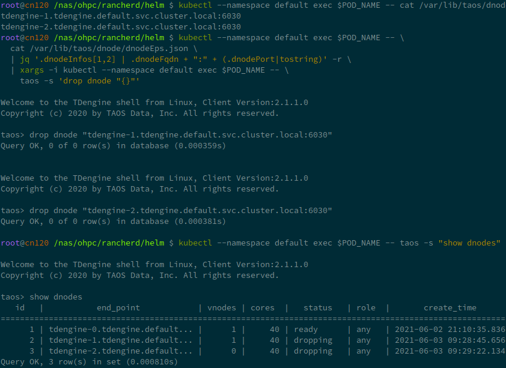

Setup TDengine Cluster with helm
Is it simple enough? Let's do something more.
Install Helm
curl -fsSL -o get_helm.sh \
https://raw.githubusercontent.com/helm/helm/master/scripts/get-helm-3
chmod +x get_helm.sh
./get_helm.sh
Helm will use kubectl and the kubeconfig setted in chapter 1.
Install TDengine Chart
Download TDengine chart.
wget https://github.com/taosdata/TDengine-Operator/raw/main/helm/tdengine-0.2.1.tgz
First, check your sotrage class name:
helm get storageclass
In minikube, the default storageclass name is standard.
And then deploy TDengine in one line:
helm install tdengine tdengine-0.2.1.tgz \
--set storage.className=<your storage class name>
If you are using minikube, you may want a smaller storage size for TDengine:
helm install tdengine tdengine-0.2.1.tgz \
--set storage.className=standard \
--set storage.dataSize=2Gi \
--set storage.logSize=10Mi
If success, it will show an minimal usage of TDengine.
export POD_NAME=$(kubectl get pods --namespace default \
-l "app.kubernetes.io/name=tdengine,app.kubernetes.io/instance=tdengine" \
-o jsonpath="{.items[0].metadata.name}")
kubectl --namespace default exec $POD_NAME -- taos -s "show dnodes; show mnodes"
kubectl --namespace default exec -it $POD_NAME -- taos

You can try it by yourself:

For a small sql test:
kubectl --namespace default exec $POD_NAME -- \
taos -s "create database test;
use test;
create table t1 (ts timestamp, n int);
insert into t1 values(now, 1)(now + 1s, 2);
select * from t1;"

Values
TDengine support values.yaml append.
To see a full list of values, use helm show values:
helm show values tdengine-0.2.1.tgz
You cound save it to values.yaml, and do some changs on it, like replica count, storage class name, and so on. Then type:
helm install tdengine tdengine-0.2.1.tgz -f values.yaml
The full list of values:
# Default values for tdengine.
# This is a YAML-formatted file.
# Declare variables to be passed into helm templates.
replicaCount: 1
image:
prefix: zitsen/tdengine
#pullPolicy: Always
# Overrides the image tag whose default is the chart appVersion.
#tag: "2.2.1.1"
service:
# ClusterIP is the default service type, use NodeIP only if you know what you are doing.
type: ClusterIP
ports:
# TCP range required
tcp: [6030,6031,6032,6033,6034, 6035,6036,6037,6038, 6039, 6040, 6041, 6042, 6043, 6044, 6045, 6060]
# UDP range 6030-6039
udp: [6030, 6031, 6032, 6033, 6034, 6035, 6036, 6037, 6038, 6039]
arbitrator: true
# Set timezone here, not in taoscfg
timezone: "Asia/Shanghai"
resources:
# We usually recommend not to specify default resources and to leave this as a conscious
# choice for the user. This also increases chances charts run on environments with little
# resources, such as Minikube. If you do want to specify resources, uncomment the following
# lines, adjust them as necessary, and remove the curly braces after 'resources:'.
# limits:
# cpu: 100m
# memory: 128Mi
# requests:
# cpu: 100m
# memory: 128Mi
storage:
# Set storageClassName for pvc. K8s use default storage class if not set.
#
className: ""
dataSize: "100Gi"
logSize: "10Gi"
nodeSelectors:
taosd:
# node selectors
clusterDomainSuffix: ""
# Config settings in taos.cfg file.
#
# The helm/k8s support will use environment variables for taos.cfg,
# converting an upper-snake-cased variable like `TAOS_DEBUG_FLAG`,
# to a camelCase taos config variable `debugFlag`.
#
# See the variable list at https://www.taosdata.com/cn/documentation/administrator .
#
# Note:
# 1. firstEp/secondEp: should not be setted here, it's auto generated at scale-up.
# 2. serverPort: should not be setted, we'll use the default 6030 in many places.
# 3. fqdn: will be auto generated in kubenetes, user should not care about it.
# 4. role: currently role is not supported - every node is able to be mnode and vnode.
#
# Btw, keep quotes "" around the value like below, even the value will be number or not.
taoscfg:
# Starts as cluster or not, must be 0 or 1.
# 0: all pods will start as a seperate TDengine server
# 1: pods will start as TDengine server cluster. [default]
CLUSTER: "1"
# number of replications, for cluster only
TAOS_REPLICA: "1"
# number of management nodes in the system
TAOS_NUM_OF_MNODES: "1"
# number of days per DB file
# TAOS_DAYS: "10"
# number of days to keep DB file, default is 10 years.
#TAOS_KEEP: "3650"
# cache block size (Mbyte)
#TAOS_CACHE: "16"
# number of cache blocks per vnode
#TAOS_BLOCKS: "6"
# minimum rows of records in file block
#TAOS_MIN_ROWS: "100"
# maximum rows of records in file block
#TAOS_MAX_ROWS: "4096"
#
# TAOS_NUM_OF_THREADS_PER_CORE: number of threads per CPU core
#TAOS_NUM_OF_THREADS_PER_CORE: "1.0"
#
# TAOS_NUM_OF_COMMIT_THREADS: number of threads to commit cache data
#TAOS_NUM_OF_COMMIT_THREADS: "4"
#
# TAOS_RATIO_OF_QUERY_CORES:
# the proportion of total CPU cores available for query processing
# 2.0: the query threads will be set to double of the CPU cores.
# 1.0: all CPU cores are available for query processing [default].
# 0.5: only half of the CPU cores are available for query.
# 0.0: only one core available.
#TAOS_RATIO_OF_QUERY_CORES: "1.0"
#
# TAOS_KEEP_COLUMN_NAME:
# the last_row/first/last aggregator will not change the original column name in the result fields
#TAOS_KEEP_COLUMN_NAME: "0"
# enable/disable backuping vnode directory when removing vnode
#TAOS_VNODE_BAK: "1"
# enable/disable installation / usage report
#TAOS_TELEMETRY_REPORTING: "1"
# enable/disable load balancing
#TAOS_BALANCE: "1"
# max timer control blocks
#TAOS_MAX_TMR_CTRL: "512"
# time interval of system monitor, seconds
#TAOS_MONITOR_INTERVAL: "30"
# number of seconds allowed for a dnode to be offline, for cluster only
#TAOS_OFFLINE_THRESHOLD: "8640000"
# RPC re-try timer, millisecond
#TAOS_RPC_TIMER: "1000"
# RPC maximum time for ack, seconds.
#TAOS_RPC_MAX_TIME: "600"
# time interval of dnode status reporting to mnode, seconds, for cluster only
#TAOS_STATUS_INTERVAL: "1"
# time interval of heart beat from shell to dnode, seconds
#TAOS_SHELL_ACTIVITY_TIMER: "3"
# minimum sliding window time, milli-second
#TAOS_MIN_SLIDING_TIME: "10"
# minimum time window, milli-second
#TAOS_MIN_INTERVAL_TIME: "10"
# maximum delay before launching a stream computation, milli-second
#TAOS_MAX_STREAM_COMP_DELAY: "20000"
# maximum delay before launching a stream computation for the first time, milli-second
#TAOS_MAX_FIRST_STREAM_COMP_DELAY: "10000"
# retry delay when a stream computation fails, milli-second
#TAOS_RETRY_STREAM_COMP_DELAY: "10"
# the delayed time for launching a stream computation, from 0.1(default, 10% of whole computing time window) to 0.9
#TAOS_STREAM_COMP_DELAY_RATIO: "0.1"
# max number of vgroups per db, 0 means configured automatically
#TAOS_MAX_VGROUPS_PER_DB: "0"
# max number of tables per vnode
#TAOS_MAX_TABLES_PER_VNODE: "1000000"
# the number of acknowledgments required for successful data writing
#TAOS_QUORUM: "1"
# enable/disable compression
#TAOS_COMP: "2"
# write ahead log (WAL) level, 0: no wal; 1: write wal, but no fysnc; 2: write wal, and call fsync
#TAOS_WAL_LEVEL: "1"
# if walLevel is set to 2, the cycle of fsync being executed, if set to 0, fsync is called right away
#TAOS_FSYNC: "3000"
# the compressed rpc message, option:
# -1 (no compression)
# 0 (all message compressed),
# > 0 (rpc message body which larger than this value will be compressed)
#TAOS_COMPRESS_MSG_SIZE: "-1"
# max length of an SQL
#TAOS_MAX_SQL_LENGTH: "1048576"
# the maximum number of records allowed for super table time sorting
#TAOS_MAX_NUM_OF_ORDERED_RES: "100000"
# max number of connections allowed in dnode
#TAOS_MAX_SHELL_CONNS: "5000"
# max number of connections allowed in client
#TAOS_MAX_CONNECTIONS: "5000"
# stop writing logs when the disk size of the log folder is less than this value
#TAOS_MINIMAL_LOG_DIR_G_B: "0.1"
# stop writing temporary files when the disk size of the tmp folder is less than this value
#TAOS_MINIMAL_TMP_DIR_G_B: "0.1"
# if disk free space is less than this value, taosd service exit directly within startup process
#TAOS_MINIMAL_DATA_DIR_G_B: "0.1"
# One mnode is equal to the number of vnode consumed
#TAOS_MNODE_EQUAL_VNODE_NUM: "4"
# enbale/disable http service
#TAOS_HTTP: "1"
# enable/disable system monitor
#TAOS_MONITOR: "1"
# enable/disable recording the SQL statements via restful interface
#TAOS_HTTP_ENABLE_RECORD_SQL: "0"
# number of threads used to process http requests
#TAOS_HTTP_MAX_THREADS: "2"
# maximum number of rows returned by the restful interface
#TAOS_RESTFUL_ROW_LIMIT: "10240"
# The following parameter is used to limit the maximum number of lines in log files.
# max number of lines per log filters
# numOfLogLines 10000000
# enable/disable async log
#TAOS_ASYNC_LOG: "0"
#
# time of keeping log files, days
#TAOS_LOG_KEEP_DAYS: "0"
# The following parameters are used for debug purpose only.
# debugFlag 8 bits mask: FILE-SCREEN-UNUSED-HeartBeat-DUMP-TRACE_WARN-ERROR
# 131: output warning and error
# 135: output debug, warning and error
# 143: output trace, debug, warning and error to log
# 199: output debug, warning and error to both screen and file
# 207: output trace, debug, warning and error to both screen and file
#
# debug flag for all log type, take effect when non-zero value\
#TAOS_DEBUG_FLAG: "143"
# enable/disable recording the SQL in taos client
#TAOS_ENABLE_RECORD_SQL: "0"
# generate core file when service crash
#TAOS_ENABLE_CORE_FILE: "1"
# maximum display width of binary and nchar fields in the shell. The parts exceeding this limit will be hidden
#TAOS_MAX_BINARY_DISPLAY_WIDTH: "30"
# enable/disable stream (continuous query)
#TAOS_STREAM: "1"
# in retrieve blocking model, only in 50% query threads will be used in query processing in dnode
#TAOS_RETRIEVE_BLOCKING_MODEL: "0"
# the maximum allowed query buffer size in MB during query processing for each data node
# -1 no limit (default)
# 0 no query allowed, queries are disabled
#TAOS_QUERY_BUFFER_SIZE: "-1"
Scale Up
You could see the details in chapter 4.
First, we should get the statefulset name in your deploy:
export STS_NAME=$(kubectl get statefulset \
-l "app.kubernetes.io/name=tdengine" \
-o jsonpath="{.items[0].metadata.name}")
Scale up is very simple, the next line scale up the TDengine dnodes to 3, no other commands required.
kubectl scale --replicas 3 statefulset/$STS_NAME
Re-call show dnodes show mnodes to check:

Scale Down
NOTE: scale-down is not completely work as expected, use it with caution.
Also, scale down requires some extra step:
Get the dnode endpoint and drop it iteratively:
kubectl --namespace default exec $POD_NAME -- \
cat /var/lib/taos/dnode/dnodeEps.json \
| jq '.dnodeInfos[1:] |map(.dnodeFqdn + ":" + (.dnodePort|tostring)) | .[]' -r
kubectl --namespace default exec $POD_NAME -- taos -s "show dnodes"
kubectl --namespace default exec $POD_NAME -- taos -s 'drop dnode "<you dnode in list>"'
Drop one dnode may cause several seconds or minutes.

Uninstall
helm uninstall tdengine
Helm doest not automatically drop pvc by now, you can drop it manually.